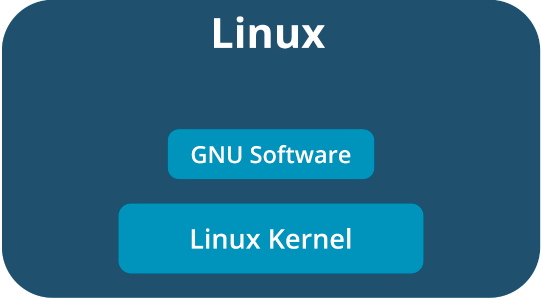

The Linux Operating System Family
Linux is a family of operating systems based on the Linux kernel, the central core of the OS that manages all components in the syste. The Linux kernel was developed by Finnish programmer Linus Torvalds in 1991, while he was a student at the University of Helsinki.
FOSS, the GNU Project, and the Unix design philosophy have all played an important role in the development of Linux. Torvalds released the Linux kernel under version 2 of the GPL. Most distributions of Linux add GNU software written by Stallman and other free software components on top of the Linux kernel. In other words, Linux is the first complete operating system family to qualify as FOSS, and like GNU software, it follows the principles of simplicity and modularity set forth in the Unix design philosophy.
Fundamentally, Linux is a combination of the Linux kernel and GNU software.